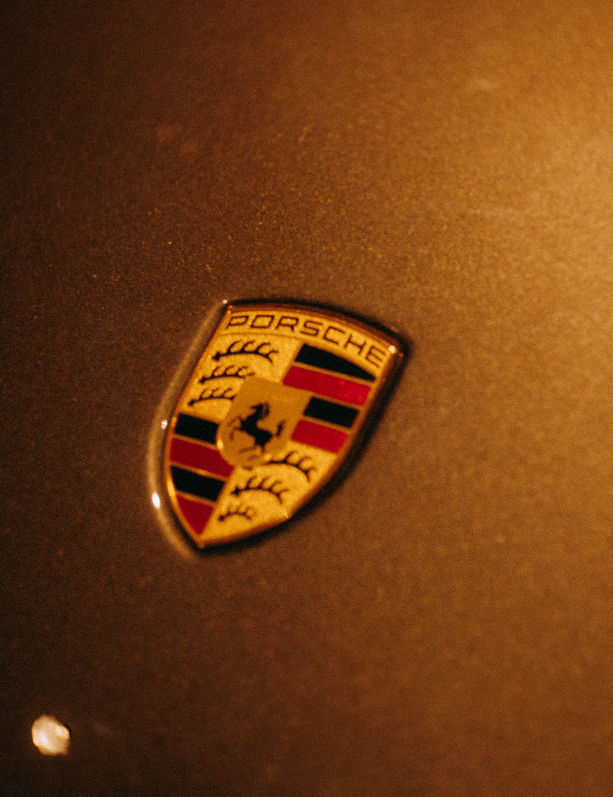
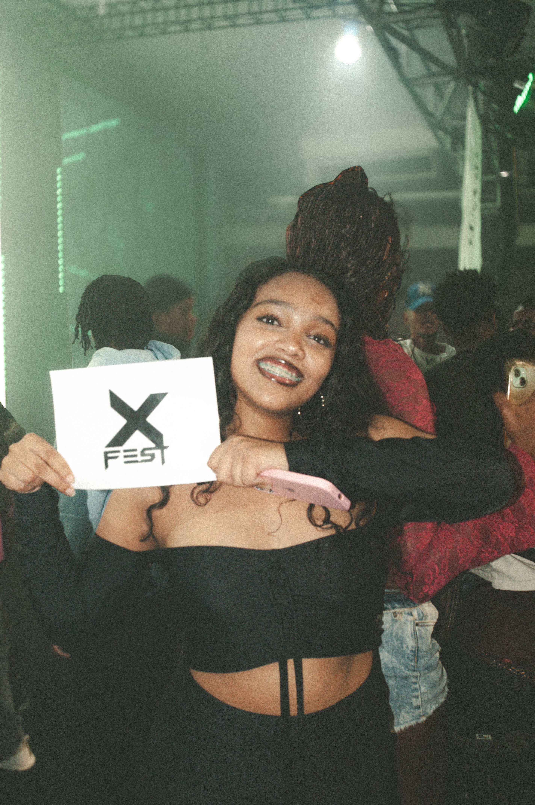
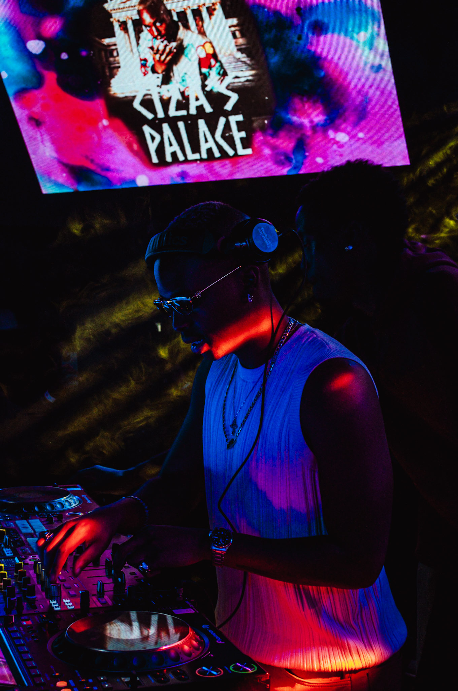
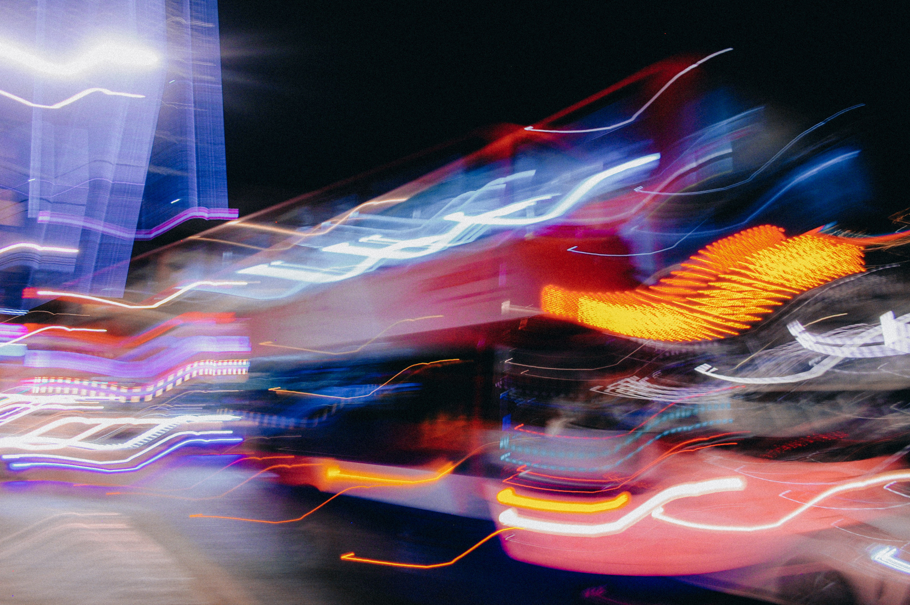
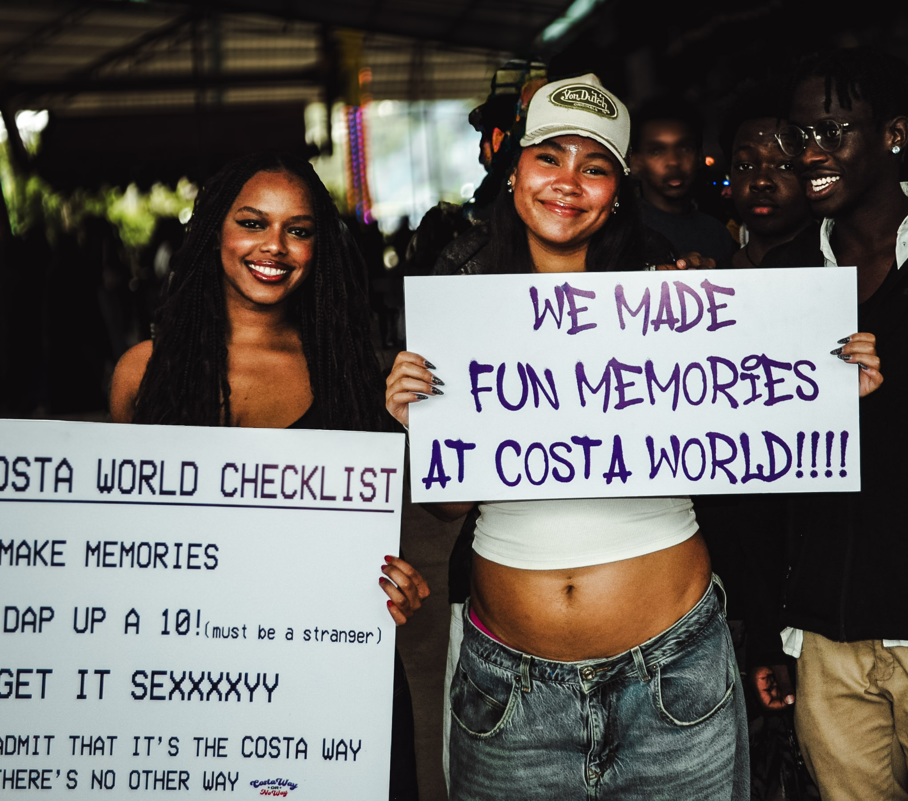
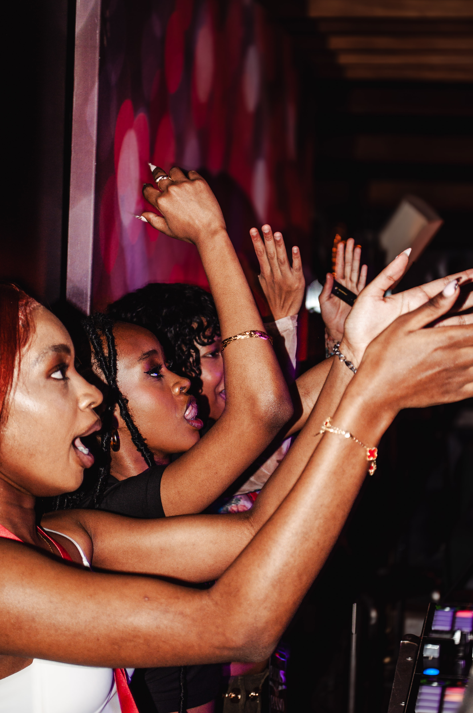
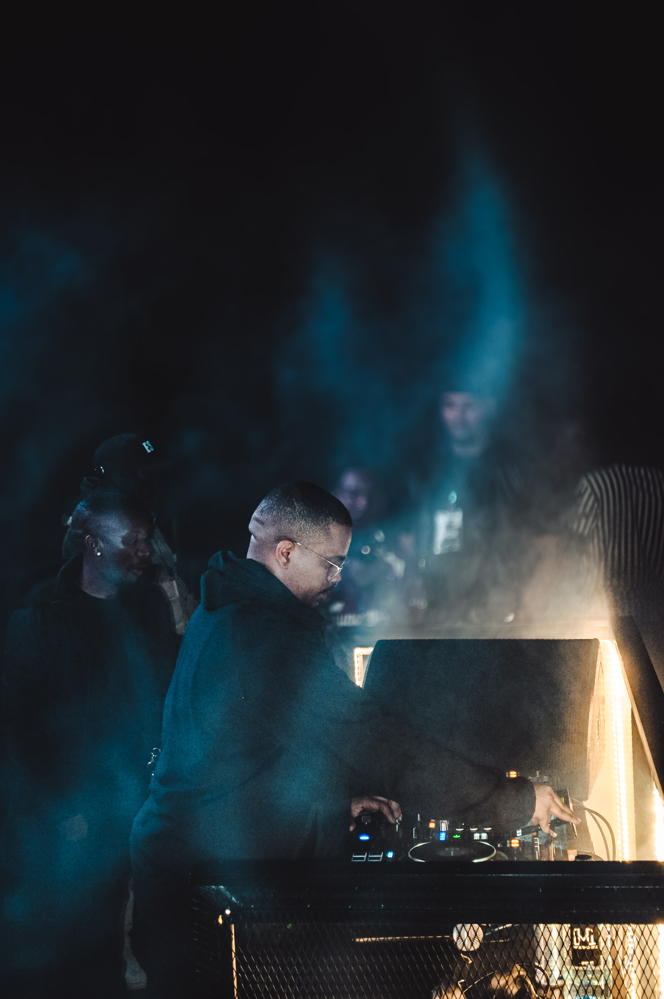
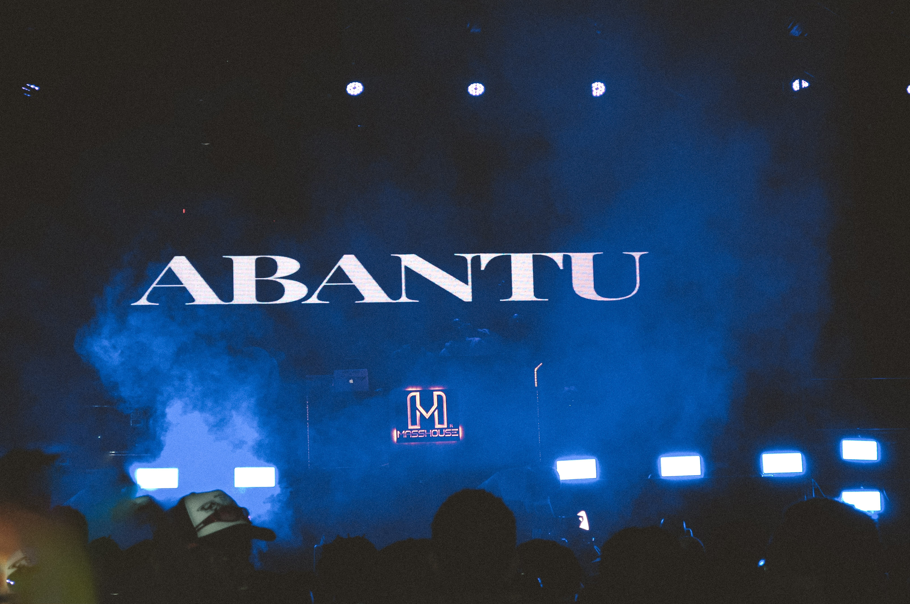
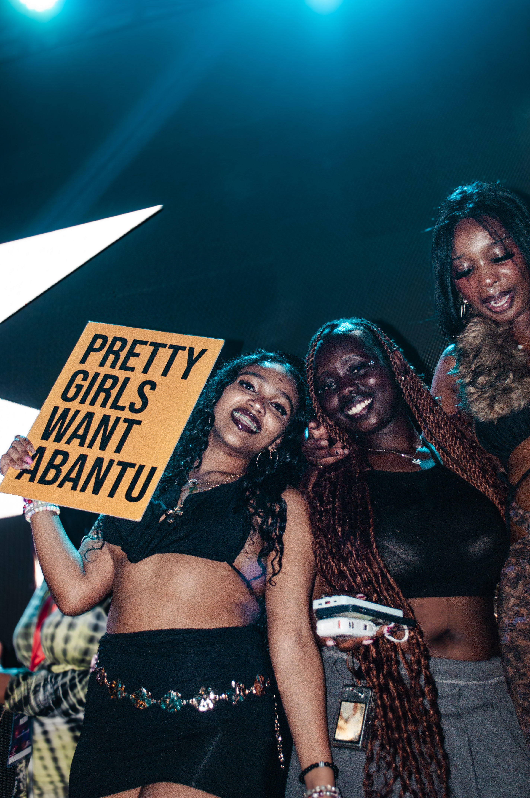
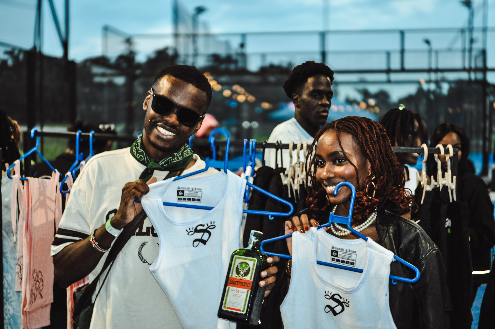

AN EXERCISE IN SEEING DIFFERENTLY.
FRAMES with
FEELING.
Some moments aren't meant to sit still. I turn the music, movement and little details into images you can feel.
Explore the work↗
DETAIL / 02
CULTURE / 03
THE NIGHT / 01
DON'T JUST look.
FEEL IT.
From the front row to the after-hours. A few of my favourite frames, made for the moments that matter.
Life doesn't come with a pause button.
That's why I make photographs.
THE IMAGE INDEX.
Every frame has a story. Find the ones that speak to you.
Ciza's Palace
Cinematics
Car Photography

Costa World

Palms & Piano

MC Uncool

Abantu × Xfest

Event Photography

The Playground — SOS
YOU'VE REACHED THE END OF THE INDEX.THE STORIES NEVER REALLY END ↗
moments
authentic ✳
HI, I'M TEDD.
Photographer. Moment-chaser. Collector of the beautifully unplanned.
I'm Tedd James, the eye behind ShotbyTJ. I photograph the atmosphere as much as the action — the people, the feeling, the details everyone else might miss.
My visual language blends nostalgic textures with bold colour and a little unpredictability. Whether it's a packed dancefloor or a quiet detail, I want the final image to take you right back there.